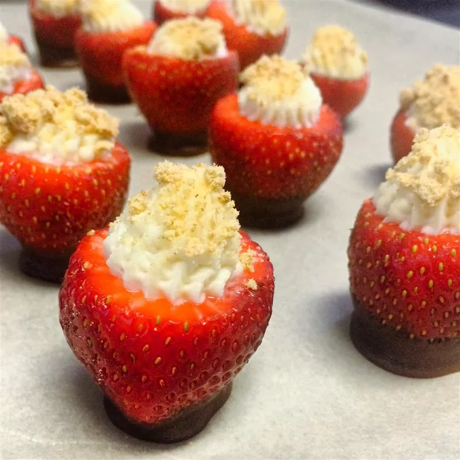

Strawberry Cheesecake Bites Recipe

Description
These mini strawberry cheesecake bites are a cute two-bite dessert. Stuffed with a cream cheese filling, they can
be prepared the night before — but not much earlier than that, as the berries may become soggy.
Ingredients
- 2 tablespoons graham cracker crumbs
- 1 (8 ounce) package cream cheese, softened
- ½ cup confectioners' sugar
- 2 teaspoons vanilla extract
- 12 large fresh strawberries
- 2 (1 ounce) squares semisweet chocolate (Optional)
- 1 teaspoon canola oil (Optional)